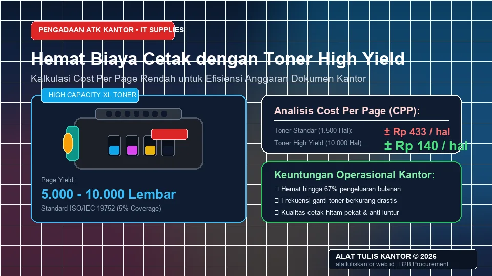
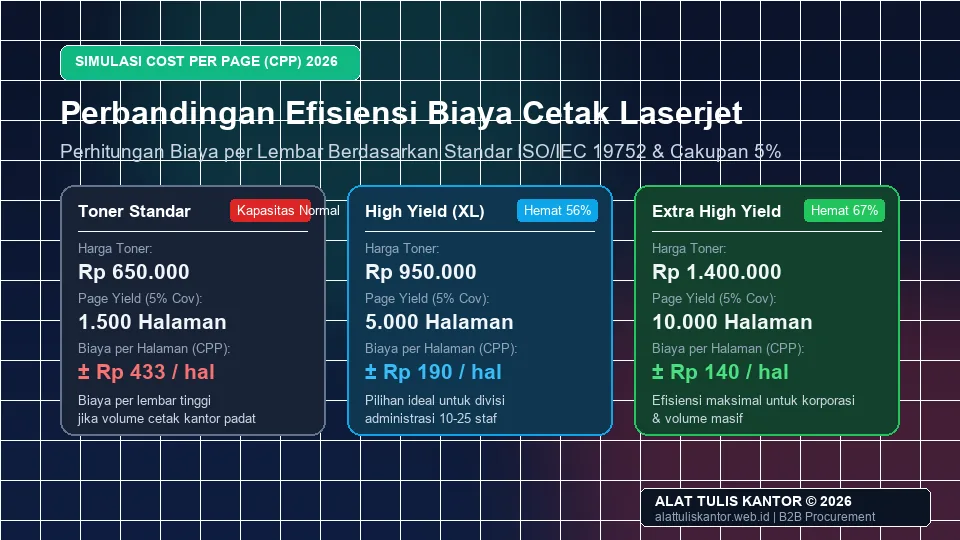

Biaya cetak dokumen kantor sering kali menjadi pos anggaran yang tidak disadari besarnya, terutama karena banyak perusahaan hanya melihat harga toner di depan tanpa memperhitungkan page yield atau jumlah halaman yang dapat dicetak dari satu unit toner tersebut. Toner dengan harga lebih mahal namun page yield jauh lebih tinggi sering kali justru lebih ekonomis dalam jangka panjang dibanding toner murah dengan page yield rendah yang harus lebih sering diganti.
Artikel ini membahas cara memilih tinta printer laserjet dengan page yield tinggi untuk menghemat biaya cetak kantor secara keseluruhan dalam skema paket atk kantor, lengkap dengan cara menghitung biaya per halaman yang sebenarnya. ATK Prima Distribusi menyediakan berbagai pilihan toner original dengan page yield tinggi untuk kebutuhan kantor Anda. Konsultasi pengadaan dapat dilakukan via WhatsApp di 0889-8964-3555.
Fakta Finansial Perkantoran: Biaya operasional cetak menyumbang hingga 15–30% dari total pengeluaran supplies kantor tahunan. Kesalahan perhitungan kapasitas toner dapat melipatgandakan pengeluaran cetak tanpa disadari oleh divisi procurement dan IT support.
Ringkasan Memilih Toner Page Yield Tinggi untuk Hemat Biaya Cetak
Menghemat biaya cetak kantor dengan memilih toner page yield tinggi dilakukan dengan menghitung biaya per halaman (cost per page), bukan hanya melihat harga toner di depan. Rumus sederhananya adalah harga toner dibagi page yield (jumlah halaman yang dapat dicetak).
- Hitung Cost Per Page (CPP): Harga beli toner dibagi dengan estimasi total lembar cetak standar.
- Pilih Toner Kapasitas Tinggi (High Yield / Extra High Yield): Menghasilkan 5.000 hingga 10.000 halaman dibanding toner standar yang hanya berkisar 1.500–2.000 halaman.
- Kurangi Frekuensi Penggantian: Menghemat waktu kerja staf IT support dan meminimalkan printer downtime di ruang kerja.
- Kombinasikan dengan Kertas Berkualitas: Gunakan kertas HVS bebas lembap agar tidak terjadi paper jam yang membuang-buang toner berharga.
Mengapa Melihat Harga Toner Saja Bisa Menyesatkan
Membeli toner dengan harga termurah tanpa mempertimbangkan page yield sering kali justru menghasilkan pengeluaran total yang lebih besar. Hal ini terjadi karena toner murah dengan kapasitas cetak rendah harus lebih sering diganti dibanding toner dengan harga sedikit lebih tinggi namun kapasitas cetak jauh lebih besar.
Sebagai contoh, toner standar dengan harga murah mungkin terlihat menggiurkan pada proposal pengadaan bulanan, namun jika kapasitasnya habis dalam waktu 2 minggu, biaya total tahunan yang dikeluarkan perusahaan akan membengkak drastis ditambah biaya pengiriman berulang kali. Oleh karena itu, evaluasi perlengkapan kantor wajib harus selalu berbasis total biaya kepemilikan (Total Cost of Ownership).
Cara Menghitung Biaya per Halaman (Cost Per Page)
Rumus dasar untuk menghitung biaya per halaman sangat sederhana dan dapat diterapkan langsung oleh tim General Affair maupun IT Support:
Rumus Cost Per Page (CPP):
Biaya per Halaman = Harga Satuan Toner ÷ Total Page Yield (Lembar)
Mari kita bandingkan dua skenario nyata:
- Toner Standar: Harga Rp650.000 dengan page yield 1.500 halaman menghasilkan biaya sekitar Rp433 per halaman.
- Toner High Yield: Harga Rp950.000 dengan page yield 5.000 halaman hanya menghasilkan biaya sekitar Rp190 per halaman.
- Toner Extra High Yield: Harga Rp1.400.000 dengan page yield 10.000 halaman menghasilkan biaya sekitar Rp140 per halaman.
Terlihat jelas bahwa toner high yield hampir separuh lebih murah dalam biaya riil per halaman cetak, meskipun harga belinya di awal terlihat lebih tinggi.

Tabel Perbandingan Biaya per Halaman: Toner Standar vs High Yield
| Jenis Toner | Harga Toner | Page Yield (5% Coverage) | Biaya per Halaman | Efisiensi Finansial |
|---|---|---|---|---|
| Toner Standar | Rp650.000 | 1.500 halaman | ± Rp433 | Dasar / Standar |
| Toner High Yield (XL) | Rp950.000 | 5.000 halaman | ± Rp190 | Hemat ~56% |
| Toner Extra High Yield (XXL) | Rp1.400.000 | 10.000 halaman | ± Rp140 | Hemat ~67% |
Tips Memilih Toner yang Tepat Sesuai Volume Cetak Kantor
1. Hitung Volume Cetak Bulanan Rata-Rata
Sebelum memilih jenis toner, hitung terlebih dahulu rata-rata volume cetak bulanan kantor Anda. Untuk volume cetak tinggi (di atas 3.000 halaman per bulan), toner high yield atau extra high yield akan jauh lebih ekonomis dibanding toner standar yang harus diganti berkali-kali.
2. Pertimbangkan Toner Original vs Kompatibel
Toner original dari merek printer biasanya memiliki page yield yang lebih terjamin akurasinya sesuai standar industri (ISO/IEC 19752) dibanding toner kompatibel pihak ketiga tanpa sertifikasi. Untuk dokumen kontrak penting, laporan keuangan, dan faktur pajak yang membutuhkan kualitas cetak tajam dan tahan lama, toner original tetap menjadi pilihan utama.
3. Perhatikan Cakupan Cetak (Coverage) Dokumen
Page yield yang tercantum produsen biasanya berdasarkan asumsi cakupan cetak sekitar 5 persen per halaman (setara dokumen teks standar surat menyurat). Jika divisi Anda sering mencetak laporan dengan grafik presentasi, tabel blok warna tebal, atau gambar arsitektur padat, realisasi page yield aktual bisa lebih rendah dari angka nominal di kemasan.
Perbandingan Toner Original vs Refill / Kompatibel
Dalam pengelolaan anggaran paket ATK kantor, banyak pengelola fasilitas mempertimbangkan opsi refill toner. Berikut perbandingan objektifnya:
- Toner Original: Kualitas bubuk polimer ultra-halus, drum dan pisau pembersih baru, tidak merusak rol pemanas (fuser unit), serta bebas debu karbon hitam yang bocor ke komponen mekanik printer.
- Toner Refill / Suntik: Biaya awal sangat murah, namun risiko kebocoran serbuk toner ke mainboard printer cukup tinggi, sering menghasilkan garis hitam vertikal pada hasil cetak, dan dapat membatalkan garansi resmi printer kantor Anda.
Studi Kasus: Efisiensi Biaya Cetak PT Wira Data Solusindo
PT Wira Data Solusindo dengan volume cetak rata-rata 8.000 halaman per bulan sebelumnya menggunakan toner standar yang harus diganti hampir setiap dua minggu, dengan pengeluaran toner bulanan mencapai sekitar Rp3,4 juta.
Setelah beralih menggunakan toner extra high yield yang hanya perlu diganti sekitar sekali per bulan, pengeluaran toner bulanan mereka turun menjadi sekitar Rp1,1 juta. Perusahaan berhasil menghemat lebih dari Rp27 juta per tahun hanya dari efisiensi pemilihan tipe toner, sekaligus mengurangi keluhan teknis dari staf karena printer tidak lagi sering kehabisan tinta di tengah jam kerja sibuk.
Hasil Optimasi: Penurunan biaya cetak hingga 67% dan waktu intervensi tim IT berkurang sebesar 80%, membuktikan bahwa investasi pada toner kapasitas tinggi memberikan ROI langsung bagi operasional kantor.
Cara Memesan Toner High Yield untuk Kantor Anda
Untuk melihat katalog lengkap toner printer laserjet dengan berbagai pilihan page yield, kunjungi halaman katalog produk perlengkapan kantor kami atau pilih paket siap pakai di Paket Cetak dan Fotokopi. Anda juga dapat mengenal profil dan legalitas perusahaan kami lebih dekat melalui halaman Tentang Kami sebelum melakukan pemesanan untuk kebutuhan kantor Anda.
Konsultasikan kebutuhan tipe cartridge printer spesifik kantor Anda bersama tim konsultan ATK Prima Distribusi melalui WhatsApp di 0889-8964-3555.
Pertanyaan yang Sering Diajukan (FAQ)
Kesimpulan
Menghemat biaya cetak kantor bukan soal memilih toner termurah, melainkan memilih toner dengan biaya per halaman terendah berdasarkan page yield yang sesuai dengan volume cetak kantor Anda. Dengan perhitungan yang tepat, perusahaan dapat menghemat anggaran toner secara signifikan dalam jangka panjang tanpa mengorbankan kualitas cetak dokumen penting.
Butuh toner high yield dan paket ATK kantor lengkap untuk kebutuhan cetak perusahaan Anda? Hubungi tim ATK Prima Distribusi via WhatsApp di 0889-8964-3555, jangkauan pengiriman aktif se-Jabodetabek dan seluruh Indonesia.